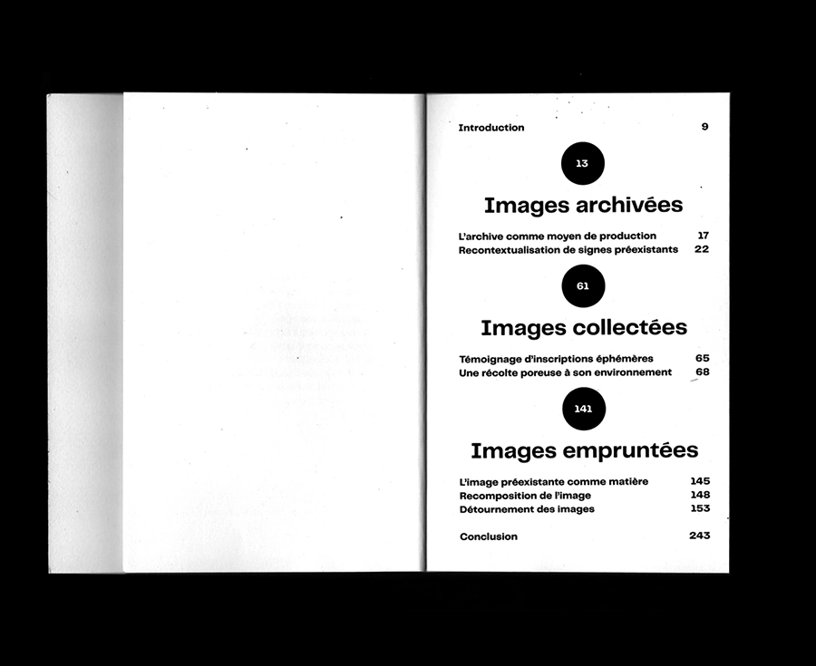
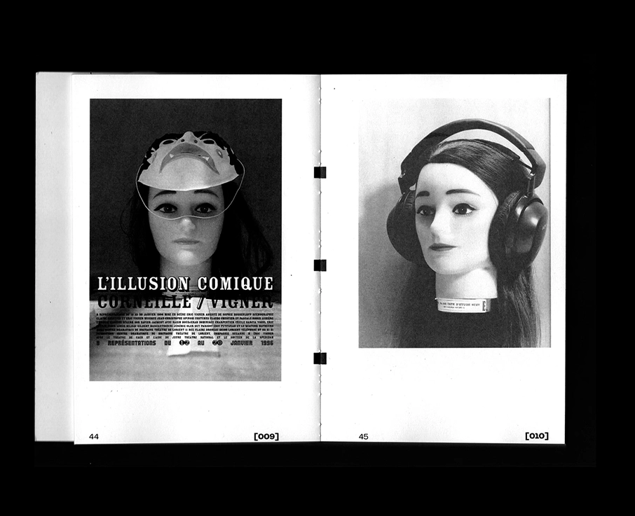
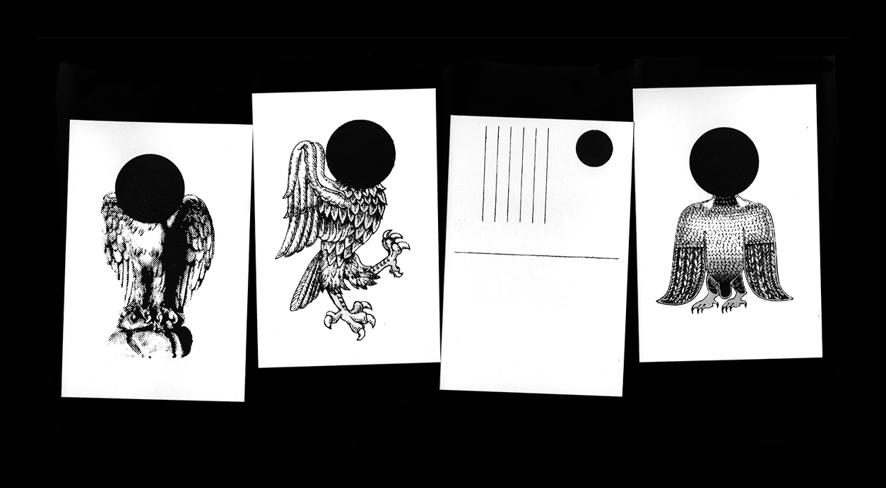
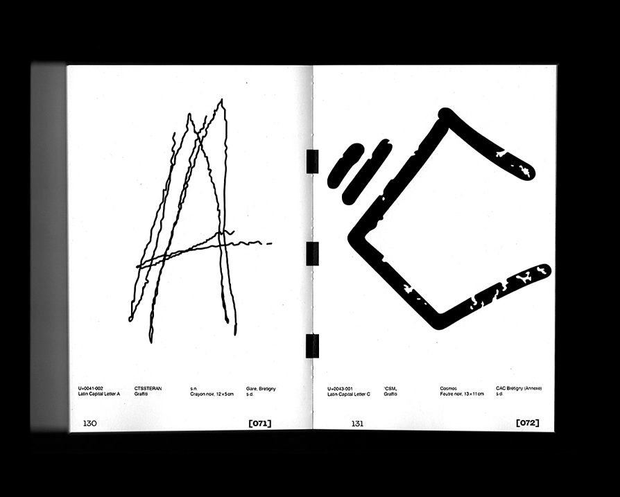
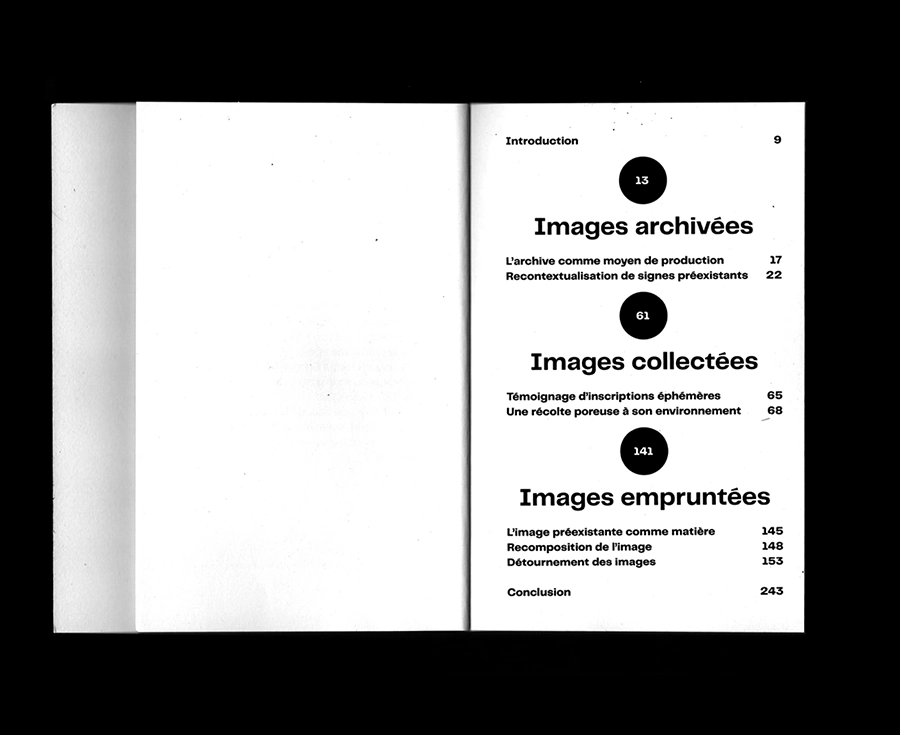
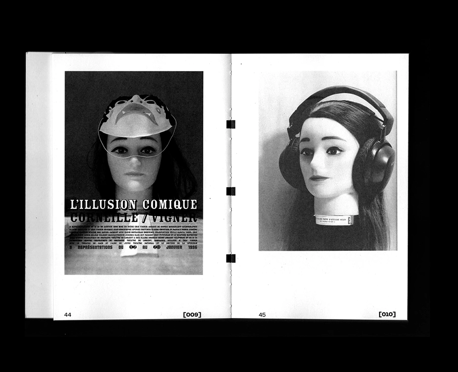
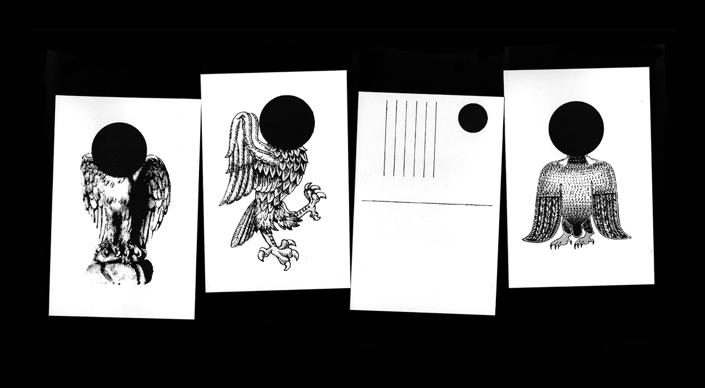
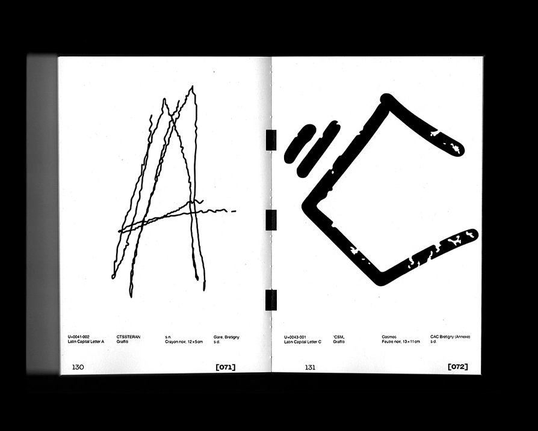


✹ Images archivées, collectées, empruntées, Thèse de design, 100 × 150 mm, imprimé par l'Imprimerie Launay, papier Cocoon recyclé : couverture 300 g et intérieur 90 g, cartes postale 300 g sérigraphiées, 2022.
Images archivées, collectées, empruntées est mon mémoire écrit et réaliser pour mon Master de design graphique au Campus Fonderie de l’image.
Plongé·e·s dans un monde où l’image est omniprésente, notre environnement est submergé d’images auxquelles nous ne prêtons plus attention.
Images archivées, collectées, empruntées aborde l’emploi et la réappropriation d’images auxquelles les designeur·e·s ont attribué un nouveau récit,
une nouvelle narration. Ces gestes sont abordés via la constitution d’une archive graphique formelle et picturale. Mais également par
la collecte et l’extraction de signes, formes, issus d’environnements naturels ou urbains. Ou encore au travers l’emprunt, le détournement ou la décontextualisation des images.
Archivées, collectées, empruntées, les images sont des matières vivantes et malléables qui demeure une source inépuisable de création.
✹ Images archivées, collectées, empruntées, design thesis,100 × 150 mm, printed l'Imprimerie Launay, recycled Cocoon paper: cover 300g
and interior 90 g, postal cards 300 g screen printed, 2022.
Images archivées, collectées, empruntées (Archived, collected, borrowed images) is my thesis written and realized for my Master of Graphic Design
at the Campus Fonderie de l'image. In a world where images are omnipresent, our environment is overwhelmed with images to which we no longer pay attention.
Images archivées, collectées, empruntées explores the use and the reappropriation of images to which designers have given a new story, a new narrative.
These gestures are explored through the constitution of a formal and pictorial graphic archive. But also through the collection and extraction of signs,
forms, from natural or urban environments. Or through the borrowing, the detour or the decontextualization of images. Archived, collected, borrowed, images
are living and flexible materials that remain an inexhaustible source of creation.
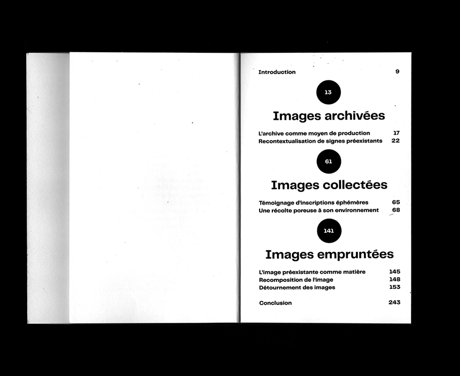
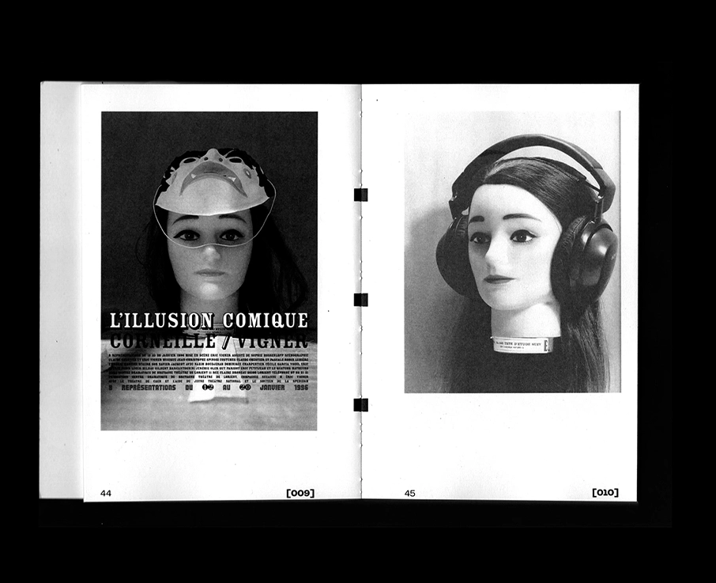
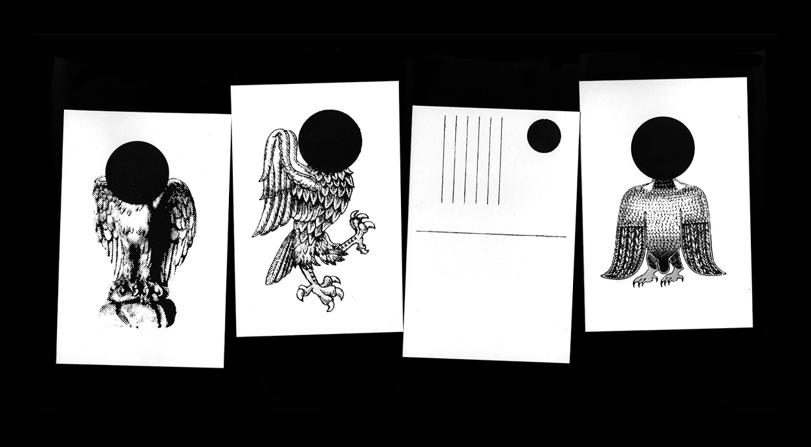
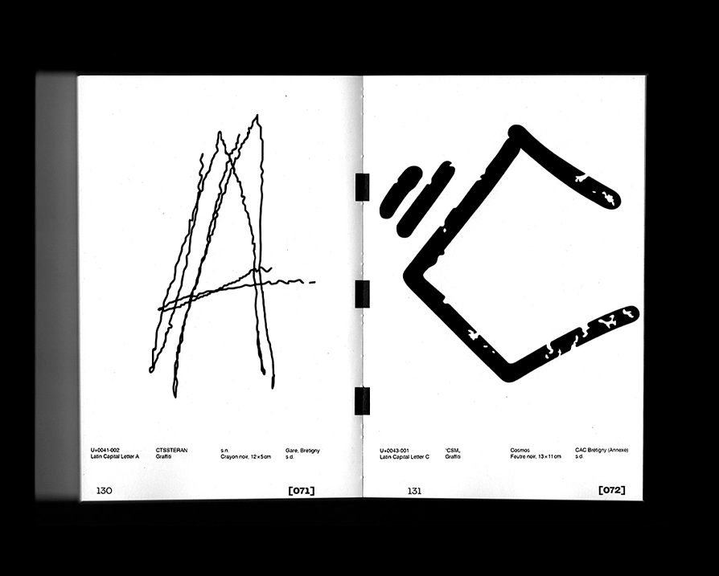